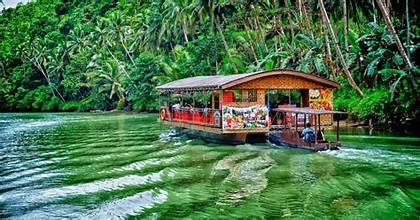

Loboc River: Bohol’s Iconic Waterway
Flowing through the heart of Bohol, Loboc River is one of the most scenic and serene destinations in the Philippines. Famous for its lush greenery, crystal-clear waters, and the iconic floating restaurants, a visit to Loboc River offers a unique experience of nature and culture intertwined. Whether you’re on a river cruise or kayaking through its calm waters, Loboc River guarantees an unforgettable escape from the hustle and bustle of city life.
Experience the Magic of Loboc River
A Scenic River Cruise Like No Other
The highlight of Loboc River is the famous **Loboc River Cruise**, where guests can enjoy a delightful buffet while being serenaded by local musicians. The cruise takes visitors along the peaceful river, surrounded by towering palm trees and vibrant tropical flora. Aside from the cruise, adventure seekers can explore the river by **paddleboarding or kayaking**, offering a more intimate connection with nature. The river is also home to the enchanting **Busay Falls**, a small yet picturesque waterfall that adds to the scenic charm of Loboc.